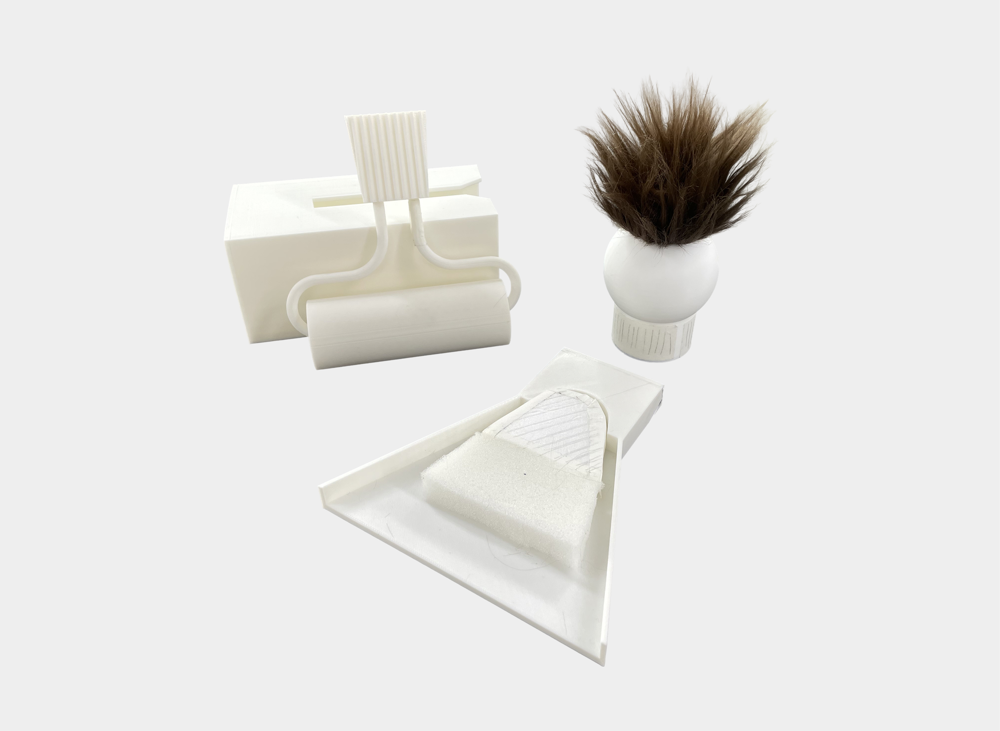
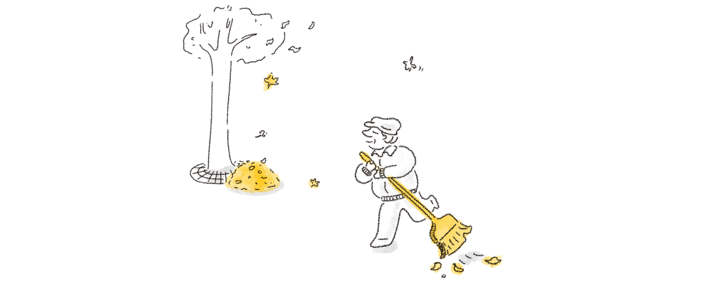
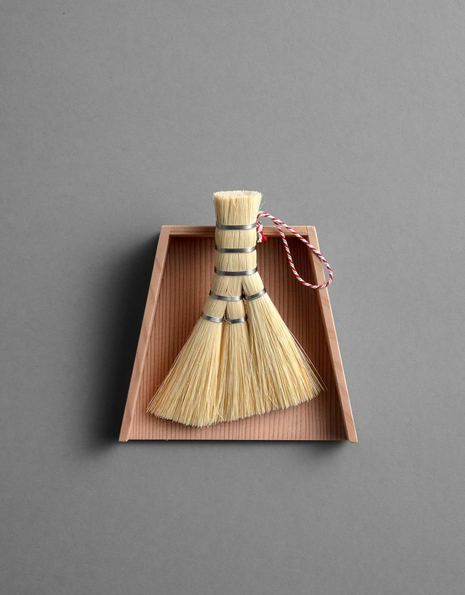
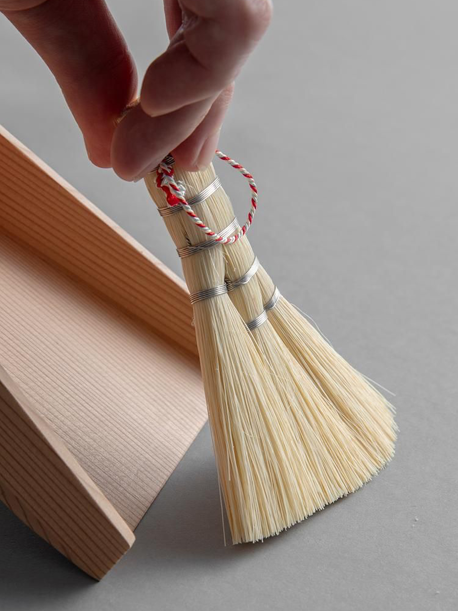
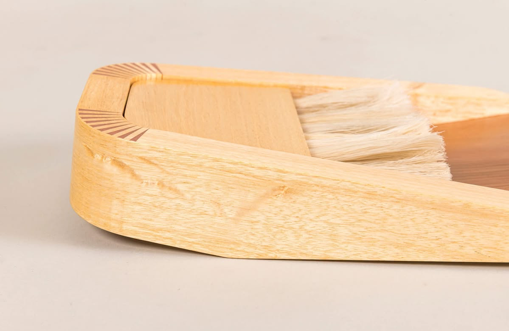
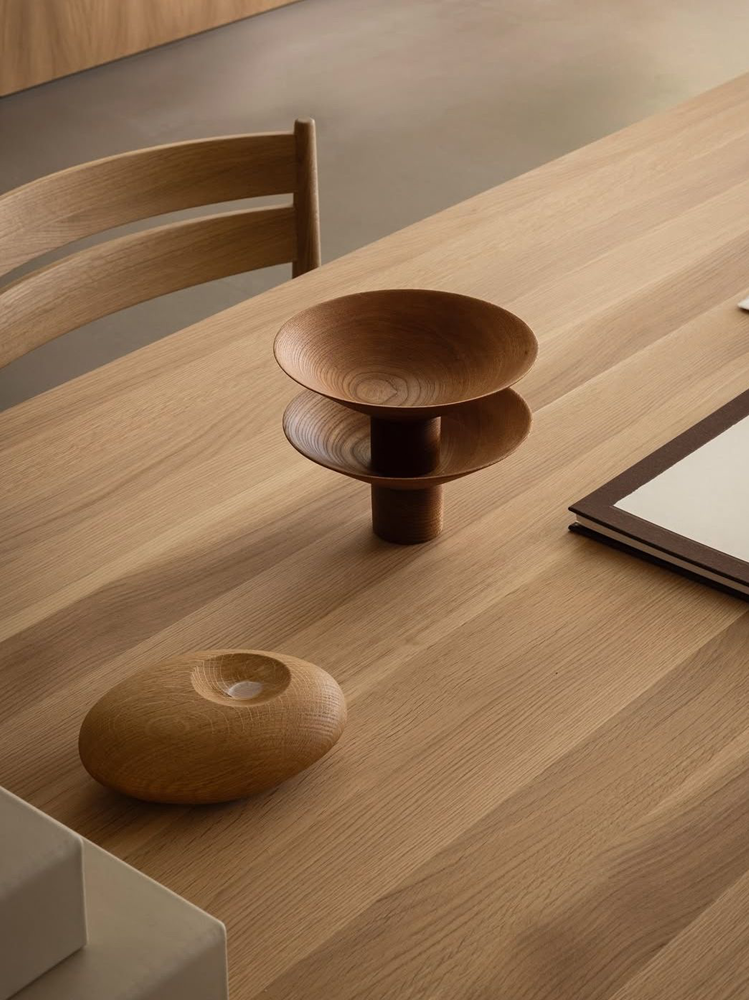
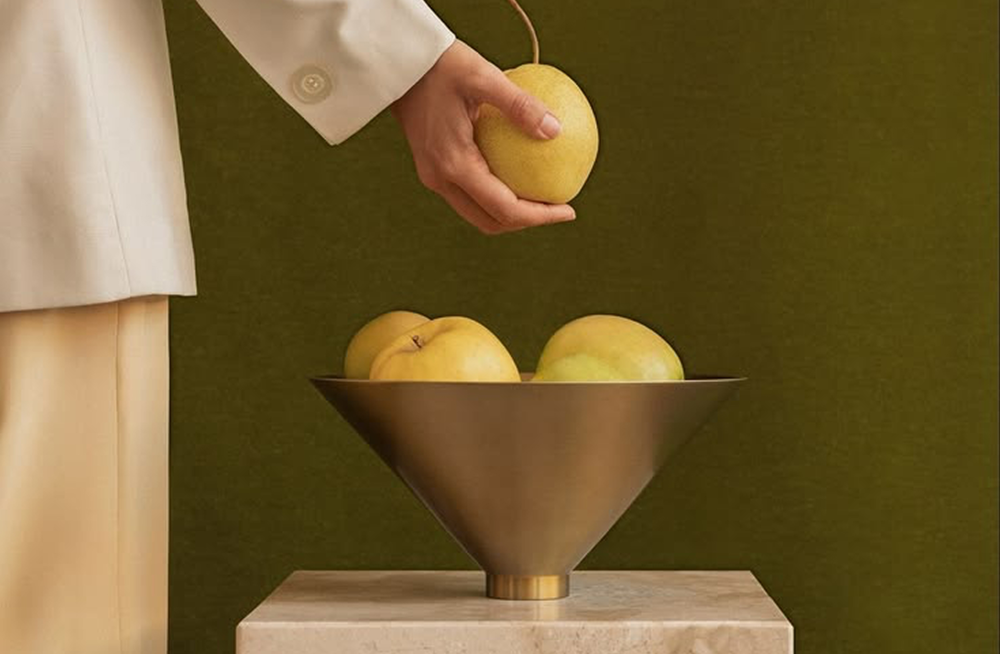
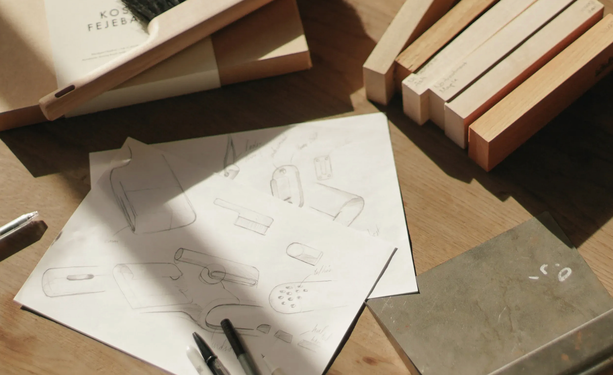

RUSTLE | Cleaning Tools
RUSTLE is a set of three cleaning tools inspired by the natural curves of autumn leaves as they gently curl inward. Translating this organic form into tools for sweeping, wiping, and dusting, RUSTLE brings a touch of autumn into everyday cleaning.


As autumn arrives, fallen leaves gather on the ground, carried by the wind and scattered across the streets. Some curl inward at their edges, gently folding into themselves as they dry. Their delicate curves and the soft rustling sound they make create a quiet moment in the changing season.
RUSTLE takes inspiration from these naturally curling leaves, translating their gentle, embracing forms into a set of cleaning tools. The curved silhouettes echo the way leaves fold inward, bringing a small piece of autumn's movement into an everyday activity.









